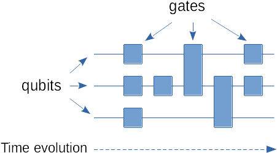
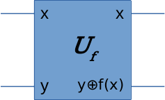
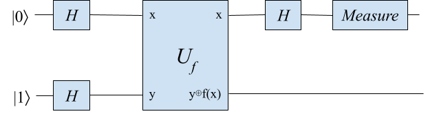
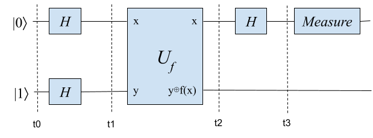
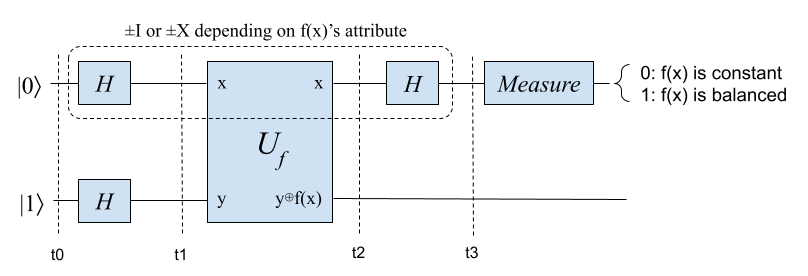
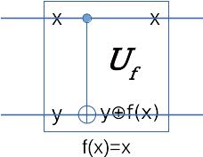

Understanding the Power of Quantum Computing 1: Deutsch Problem
Ping Zhou, 2021-04-01
Introduction
Quantum computing is one of the hottest topic these days. You might have already heard about hypes like “quantum supremacy”. But why quantum computers can be faster on solving some problems? And how does it work behind the scene?
In this article I’m going to use a simple problem (the Deutsch Problem) as an example and walk you through the process.
Ok, let’s get started.
Terms and Basic Concepts
Before we start discussing the problem, let’s first review some basic terms and concepts.
Qubits
A single classical bit can be either 0 or 1 at any time. A qubit, similarly, can be at one of the“base” states - \(|0\rangle\), \(|1\rangle\). However, a qubit can also be in a superposition state which makes it look like on both \(|0\rangle\) and \(|1\rangle\) at same time. For example, a common state you might see in quantum computing is \(\frac{1}{\sqrt{2}}(|0\rangle+|1\rangle)\). Measuring the qubit at this state will give you 0 or 1 with same probability (i.e. 50% each).
Quantum Gates
Some of the quantum gates we’ll use in this example:
- \(I\) gate: “Identity” gate, which outputs same as its input.
- \(H\) gate: aka Hadamard gate. We’ll use this gate to put our qubits into superposition state. Essentially, H gate will turn \(|0\rangle\) into \(\frac{1}{\sqrt{2}}(|0\rangle+|1\rangle)\), and turn \(|1\rangle\) into \(\frac{1}{\sqrt{2}}(|0\rangle-|1\rangle)\). Another attribute we want to note here is that \(HH=I\), meaning that applying two H gates in a row will cancel each other.
- \(X\) gate: Flips the input (i.e. it turns \(|0\rangle\) into \(|1\rangle\), and turns \(|1\rangle\) into \(|0\rangle\)).
- \(Z\) gate: This gate operates on the “phase” of the input. The output of Z gate is \((-1)^x|x\rangle\). If we supply input \(|0\rangle\) to a Z gate, we’ll still get \(|0\rangle\). But if we supply \(|1\rangle\) to a Z gate, we’ll get \(-|1\rangle\) at the output.
- \(CNOT\) gate: aka “Controlled NOT” gate. This gate takes 2 qubits as inputs, let’s say \(a\) and \(b\). If \(a\) is 1 then \(b\) is flipped, otherwise \(b\) is unchanged.
Some other useful theorems of these quantum gates (we’ll need them later in discussion):
- \(HZH=X\)
- \(HIH=I\)
Quantum Circuit
A quantim circuit is like a blueprint of the algorithm. Each qubit is a line in the diagram, with quantum gates connect the lines (qubits) and time flows from left to right.

Deutsch Problem
The problem we are going to solve with quantum computing is called the Deutsch Problem. It is, in my opinion, the simplest problem that we can use for demonstrating the advantage of quantum computing.
Suppose someone gave us a 1-bit function (i.e. both its input and output are 1-bit). The function was given as a “blind box”, meaning that we don’t know how it works. The only thing we can do with this function is to evaluate it - by feeding it with input and observing its output.
Since this function takes 1-bit input and outputs 1-bit results, there aren’t many possible variants. In fact, there are only 4 possible 1-bit funcitons:
- \(f(x)=0\), the function always outputs 0 regardless of input.
- \(f(x)=1\), the function always outputs 1 regardless of input.
- \(f(x)=x\), the function outputs same bit as the input.
- \(f(x)=\bar{x}\), the function outputs the inverse of the input bit.
Among these 4 functions, the first two are called “constant” functions because they return constant values regardless of input. The other two functions are called “balanced” functions because they return 0 or 1 for half of the possible inputs respectively.
Deutsch Problem: If we are given a 1-bit function f(x) as a blind box, how do we decide whether it is constant or balanced? Remember, the only thing we can do with the function is to evaluate it!
If we are using a classical computer, how many times do we need to evaluate the function? Apparently we’ll need two evaluations - one evaluation won’t be enough to tell if it’s constant or balanced.
But if we are using a quantum computer, we just need to run our circuit once and we’ll know the answer!
Solving Deutsch Problem with Quantum Computing
Transform the problem for quantum circuit
To solve Deutsch Problem with quantum computing, we need to somehow “incorporate” f(x) in our quantum circuit. However in quantum circuit, every operator must be reversible (i.e. you must be able to compute input back from output). The function we are given is not likely to meet this requirement - E.g. constant functions are not reversible. So how do we interact with f(x) in our quantum circuit?
Fortunately there is a generic solution to this issue: We transform the function f(x) into a quantum operator (a block of quantum circuit) \(U_f\) like this:

This quantum operator uses an additional (auxilary) input (y), in additional to the original input to function f(x). And on the output side, it outputs x and the Exclusive OR of y and return value of f(x). It’s easy to validate that this operator \(U_f\) is reversible.
So with quantum computing, we need to transform the Deutsch Problem a little bit so it can be computed by our quantum circuit. We need to ask the person who gave us the function f(x):
Instead of giving me function f(x) as a blind box, can you give me its corresponding \(U_f\) (also as a blind box)?
The person kindly wrapped f(x) into \(U_f\) and gave it to us. Fantastic! Now we can build our quantum circuit with \(U_f\).
Build our quantum circuit
The quantum circuit for solving Deutsch Problem is actually pretty simple. We initialize two qubits to \(|0\rangle\) and \(|1\rangle\) states, put them through H gates, then plug in the \(U_f\) block and another H gate, and measure the first qubit for results:

We run the circuit and measure the first qubit. If we get 0 from measurement, then function f(x) must be constant. Or else it must be a balanced function.
That’s it! We only run the circuit once and we get the result of Deutsch Problem!
How it works
The quantum circuit worked like magic - we just need to run circuit once and it tells us whether the function is constant or balanced. But how it actually achieves this acceleration? In this section I’ll walk you through the analysis.
We split our circuit into time steps and check the system state of each time step.

Time step t0:
Our system is at initial state \(|0\rangle |1\rangle\).
Time step t1:
The H gates put the two qubits into superpositions. The first qubit becomes \(\frac{1}{\sqrt{2}}(|0\rangle+|1\rangle)\), and the second qubit becomes \(\frac{1}{\sqrt{2}}(|0\rangle-|1\rangle)\). For convenience, let’s name these two states \(|+\rangle\) and \(|-\rangle\). So the state of our system is now \(|+\rangle |-\rangle\).
Time step t2:
The input of \(U_f\) is \(|+\rangle |-\rangle\). On the output side of \(U_f\), the first qubit is still \(|+\rangle\) (\(\frac{1}{\sqrt{2}}(|0\rangle+|1\rangle)\)). The second qubit is more interesting - it’s the XOR of y and f(x). Since f(x) is a 1-bit function, the value of f(x) is either 0 or 1. We can examine the two outcomes of f(x):
- If f(x) is 0, then the second qubit will remain unchanged: \(\frac{1}{\sqrt 2}(|0\rangle-|1\rangle)\), or \(|-\rangle\).
- If f(x) is 1, then the second qubit will be the inverse of y (\(|-\rangle\)). But y is in superposition state, how do we inverse it? Here is the trick: You can distribute the inverse operation into the equation - \(|0\rangle\) becomes \(|1\rangle\) and vice versa. So the second qubit becomes \(\frac{1}{\sqrt{2}}(|1\rangle-|0\rangle)\) after inversion. But wait… isn’t this just \(|-\rangle\) with a negative sign (\(-|-\rangle\))?
Summarizing the two outcomes of f(x), the second qubit will get a negative sign if f(x) is 1. In other words, the second qubit can be expressed like this: \((-1)^{f(x)}|-\rangle\). Counting in the first qubit, the state of our system becomes: \(|+\rangle (-1)^{f(x)}|-\rangle\). Since we are treating the two qubits as a system, the nagative sign part (\((-1)^{f(x)}\)) is a global phase of our system. We can move this global phase to the front of our equation: \((-1)^{f(x)} |+\rangle|-\rangle\).
What does this tell us? It tells us that if we supply \(|+\rangle |-\rangle\) as input to \(U_f\), we’ll get \((-1)^{f(x)} |+\rangle|-\rangle\) at its output. Or more formally:
\[ U_f|+\rangle|-\rangle=(-1)^{f(x)} |+\rangle|-\rangle \]
In other words, the value of f(x) now becomes the global phase of our system - it controls the negative sign before \(|+\rangle |-\rangle\). This trick is commonly called Phase Kickback.
But how does this even help us determine the attribute of f(x)? Global phase is not distinguishable when we measure the state, after all.
Let’s examine the four possibilities of f(x) and what \(U_f\) will become in each circumstance:
- If f(x) is a constant function that always returns 0, then \(U_f|+\rangle|-\rangle=(-1)^{f(x)} |+\rangle|-\rangle=|+\rangle|-\rangle\). So \(U_f\) is equivalent to an \(I\) gate.
- If f(x) is a constant function that always returns 1, then \(U_f|+\rangle|-\rangle=(-1)^{f(x)} |+\rangle|-\rangle=-|+\rangle|-\rangle\). So \(U_f\) is equivalent to \(-I\) (\(I\) gate with negative sign).
- If \(f(x)=x\) (i.e. it returns the same bit as x), then \(U_f|+\rangle|-\rangle = (-1)^{f(x)}|+\rangle|-\rangle = (-1)^x|+\rangle|-\rangle\). Recall that a Z gate gives us \((-1)^x|x\rangle\), this means \(U_f\) is equivalent to a Z gate in this circumstance.
- Similarly if \(f(x)=\bar{x}\) (i.e. it returns the inverse of x), it’s easy to show that \(U_f\) is equivalent to \(-Z\) gate (a Z gate with negative sign).
Now we are getting somewhere: If f(x) is constant, \(U_f\) will be equivalent to a \(\pm I\) gate. And if f(x) is balanced, \(U_f\) will be equivalent to a \(\pm Z\) gate!
Time step t3:
Recall these theorems we mentioned earlier:
- \(HZH=X\)
- \(HIH=I\)
Looking at the first qubit of our circuit - what happened from t0 to t2? We got an H gate, then the \(U_f\) block which is equivalent to either \(\pm I\) or \(\pm Z\) gate, depending on the attribute of function f(x). What if we append another H gate after t2?
- If \(U_f\) is equivalent to \(\pm I\) gate (meaning that the function is constant), the operations from t0 to t3 on the first qubit will be \(H\), \(\pm I\), then \(H\) again. And since \(HIH=I\), the operations from t0 to t3 will be equivalent to a \(\pm I\) gate on the first qubit.
- Similarly, if \(U_f\) is equivalent to \(\pm Z\) (i.e. the function is balanced), operations from t0 to t3 will be \(\pm HZH=\pm X\). So from t0 to t3 it was as if we did a \(\pm X\) gate on the first qubit.
Now let’s measure the first qubit - guess what we’ll get?

If the function f(x) is constant, from t0 to t3 the first qubit will go through a \(\pm I\) gate. So after t3 it will be at \(\pm|0\rangle\) state, and we’ll get a 0 from measurement.
If the function f(x) is balanced, the first qubit will go through a \(\pm X\) gate from t0 to t3. So after t3 it will be at \(\pm |1\rangle\) state, and we’ll get a 1 from measurement.
Now we know how quantum computing solves Deutsch Problem with just one run!
Conclusion and Thoughts
What do we learn from this journey? We can see that superposition played a crucial role in solving the Deutsch Problem with just one run. By putting our qubits into superpositions and feeding them into \(U_f\), we sort of examined all 4 possibilities simultaneously and turned f(x)’s attribute into the global phase of our system state. We then revealed the phase using transformations (\(HIH=I\) and \(HZH=X\)) and read it out from measurement.
“Evaluation twice vs. run circuit once” might seem trivial to you. But think about it - what if we expand the input (number of bits) to the problem? On a classical computer, the number of evaluations will grow exponentially (well, if we want to be 100% sure about the answer). But with quantum computer we’ll still only need to run the circuit once!
Appendix: How to construct \(U_f\)?
One question you may still have is: How does the person who gives us function f(x) contruct the corresponding \(U_f\) (a block of quantum circuit)? This is particularly important if you want to simulate the problem - after all, you need \(U_f\) to build your circuit.
This can be done by examining the truth table of \(U_f\). For example, if the person wants to give us a balanced function \(f(x)=x\), the truth table of f(x) and \(U_f\) will be like this:
| x | 0 | 1 |
|---|---|---|
| f(x) | 0 | 1 |
| \(y\oplus f(x)\) | \(y\oplus 0 = y\) | \(y\oplus 1 = \bar{y}\) |
So y is inversed if x is 1 and unchanged otherwise. Apparently \(U_f\) for this function can be implemented with a CNOT gate:

\(U_f\) for other 1-bit functions can be constructed in a similar way.